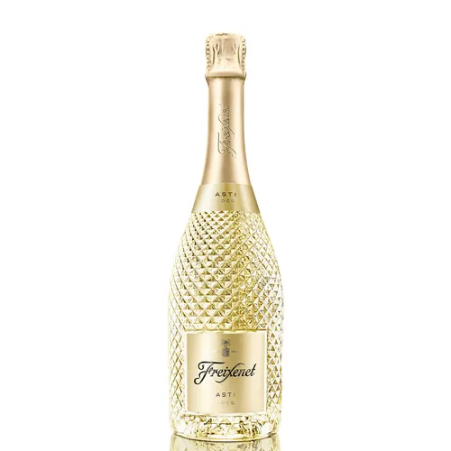
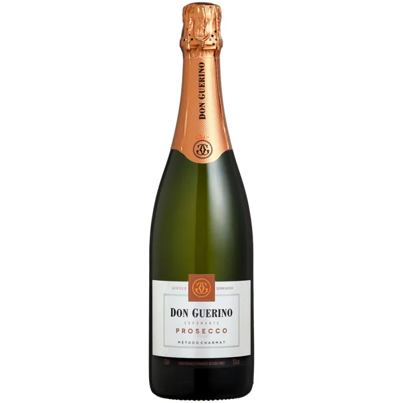
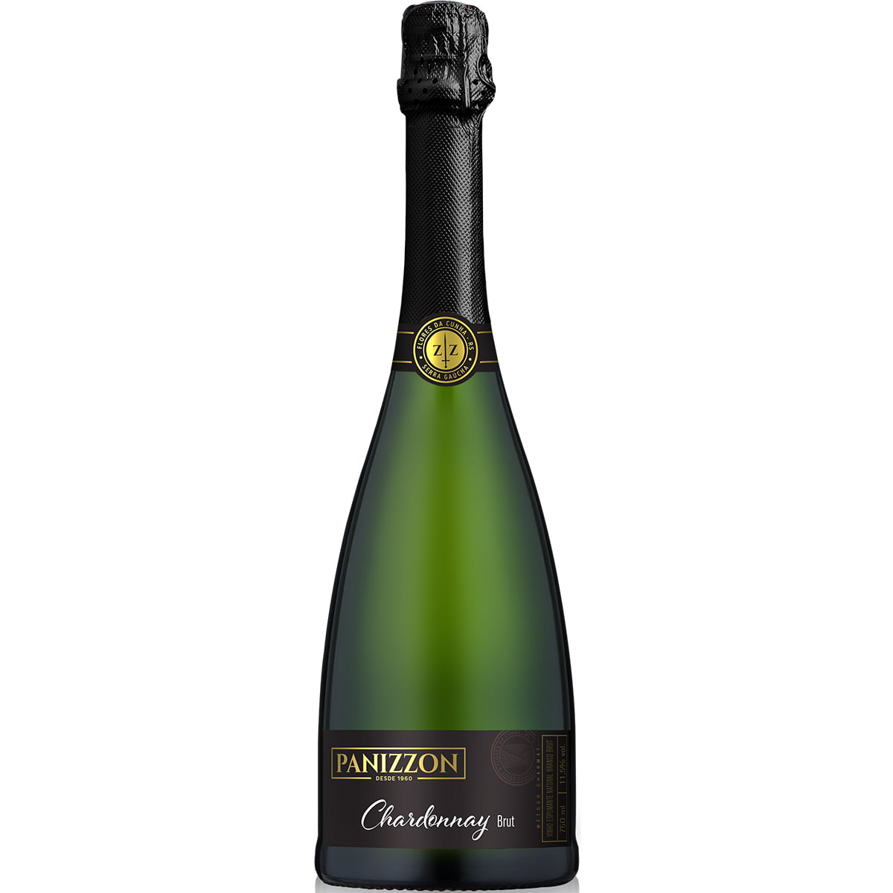
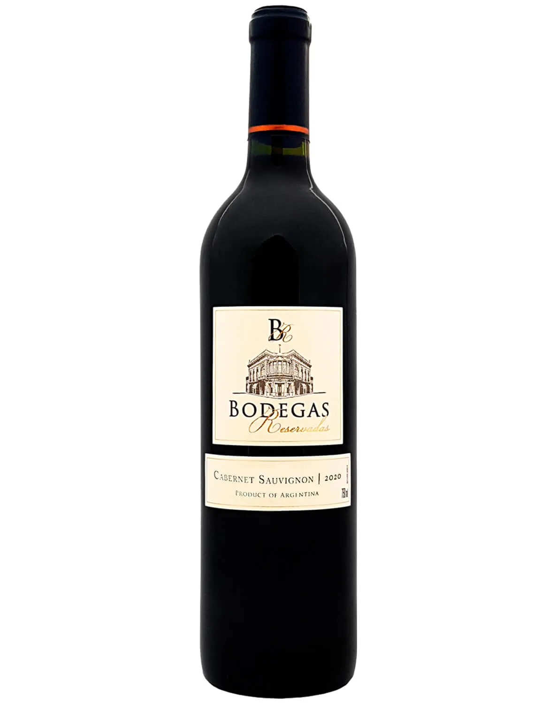
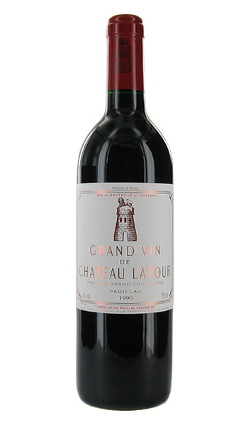
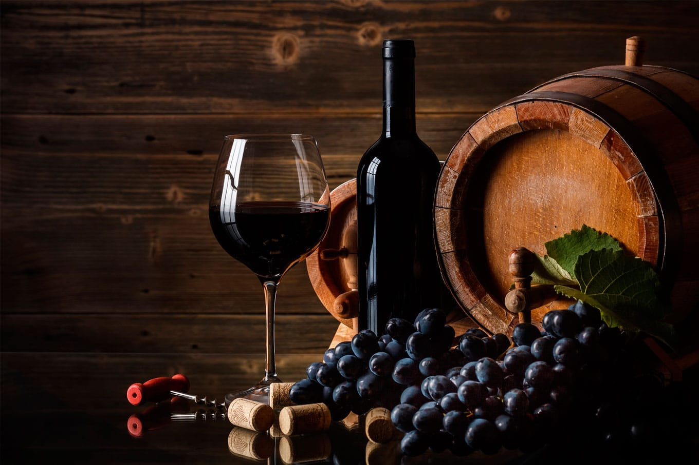

"ESPUMANTES"
Espumante Freixenet Asti DOCG 750ML

Freixenet Asti D.O.C.G. é um espumante doce, produzido em uma das mais prestigiadas regiões vinícolas da Itália, Piemonte. Um espumante único, delicado e elegante,
devido ao seu processo de vinificação. Equilibra o frutado com doçura refrescante tornando-se ideal para momentos doces.
Espumante Don Guerino Prosecco Brut 750ML

Elaborado exclusivamente com uvas Prosecco, através do método champenoise, permanece em autólise de leveduras por no mínimo 18 meses. Brilhante, coloração esverdeada
, fino, intenso perlage e generosa coroa. Aromas delicados, frutados e florais, em boca é intenso e refrescante.
Espumante Pannizon Chardonay Brut Branco 750ML

O Espumante Chardonnay Brut é elaborado 100% com uvas Chardonnay,
sendo ela uma rainha entre as uvas destinadas a elaboração de espumantes,inclusive, produz espumantes fantásticos.
"VINHOS"
Vinho Tinto Bodegas Reservadas Cabernet Sauvignon 2020

Cabernet Sauvignon é a mais cultivada no mundo, sendo considerada a rainha entre os tipos de uva tinta. Por sua resistência e excelente capacidade de adaptação a diferentes climas, a casta está presente em regiões produtoras de vários continentes, como Europa, América, Oceania e África. Os vinhos elaborados com essa uva são versáteis,
podendo ser apreciados em várias ocasiões e harmonizados com diversos pratos.
CHÂTEAU LATOUR

Uma garrafa magnum da safra de 1961, por exemplo, já foi vendida por US$ 62 mil.
Uma curiosidade: por volta do século XVII, Lafite, Mouton e Latour pertenceram a um mesmo dono,
o Marquês de Segur, dito "Príncipe dos Vinhos".

Produzido na sub-região de Sauternes, em Bordeaux, as uvas utilizadas na produção desse Premier Cru Supérieur são colhidas seletivamente,
por vezes, uma a uma, sendo usadas apenas aquelas afetadas pela Botrytis cinerea.
NÃO DEIXE PASSAR DE TOMAR NO SEU CHURRASCO NOSSOS ESPUMANTES E VINHOS DE ALTA QUALIDADE!
